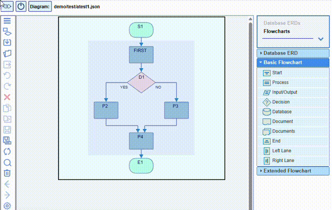

The Settings dialog offers the option to choose whether to use the start & end layers or not,
as well as whether to use the side swim lanes or not.
In the case of a vertical flow direction, the side swim lanes appear at the top and at the bottom
of the diagram,
while in the case of a horizontal direction they appear on the left and on the right.
There are specific start, end, left/top and right/bottom nodes.
The central layers and/or lanes can be added or removed (only when empty)
from the context menus on the canvas.
